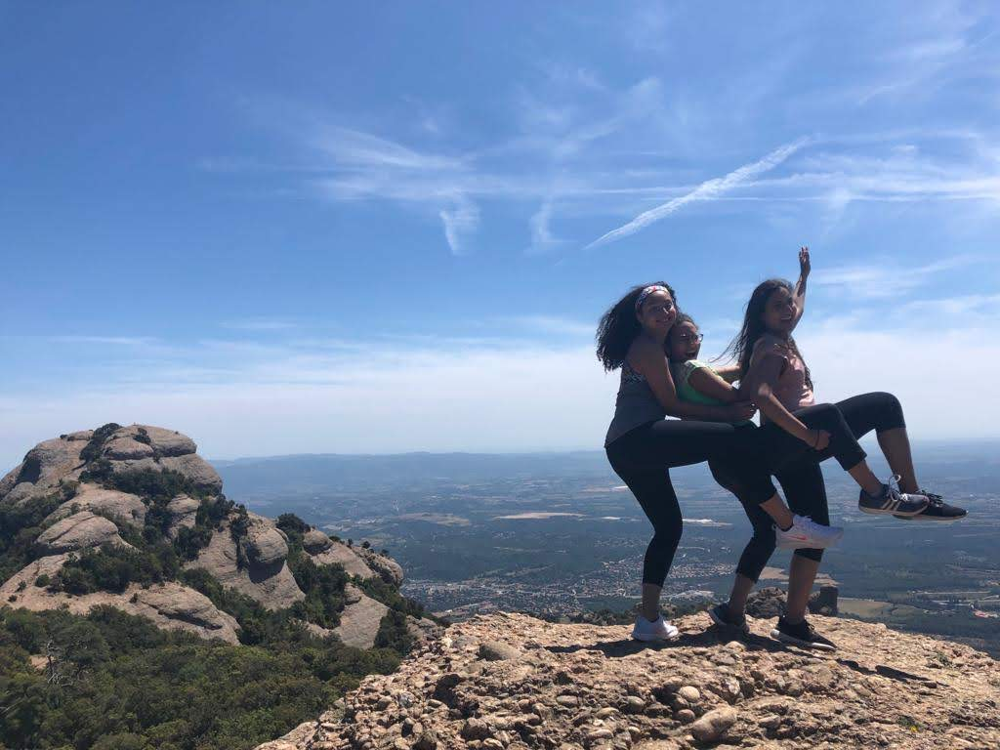
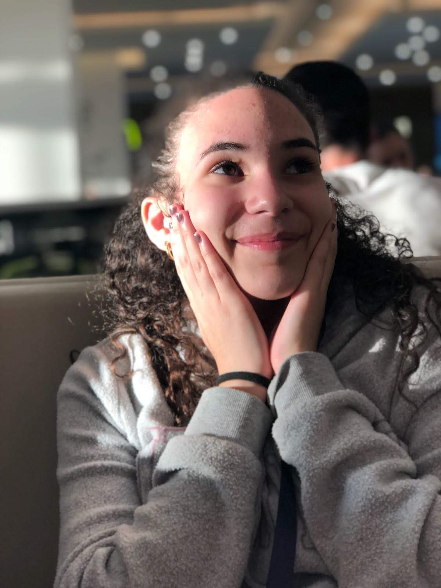

Laura's Portfolio
=======Laura's Portfolio
>>>>>>> f5dfb34f24c760b2f539626a1998ac5edb7be72aMy name is Laura Queipo, I am a rising junior at MIT. I am currently majoring in Computer Science and Engineering and planning to minor in Brain and Cognitive Science. On campus, I am mainly involved with the international community. Indeed, I am a member of the International Student Association (ISA) and an executive office of my international living community, Number Six Club.
Click to change colors!
I was born and raised in Venezuela, a place that has transformed from a place of beauty and progress into one of poverty and crime. Because of its troubles, I learned to be resilent, resourceful, and a problem-solver. My situation ignited a desired to improve the quality of my life and of those around me. Hence, I decided to study abroud and seek a place where I would learn strong fundamentals and truly grow.
 <<<<<<< HEAD
<<<<<<< HEAD
Projects
=======Projects
>>>>>>> f5dfb34f24c760b2f539626a1998ac5edb7be72aI mostly use photographing to keep almost as a diary of my life. For me to remember what I was up to during those times. So, my photographs are mainly me with my friends, family, or of places that I was lucky to visit (Brazil, Romania, Argentina, Spain).
 <<<<<<< HEADHidden Talent
=======Hidden Talent
>>>>>>> f5dfb34f24c760b2f539626a1998ac5edb7be72aI do not know if it is very much hidden, but I love drawing cartoons! I have done it since I was a little girl and every birthday that my family members or close friends have I try to make their day a bit better with a drawing of their favorite childhood show. (I certainly hope so!)
Click here to see more pictures of me and the places I have visited!
Click here to see a random picture of me travelling!